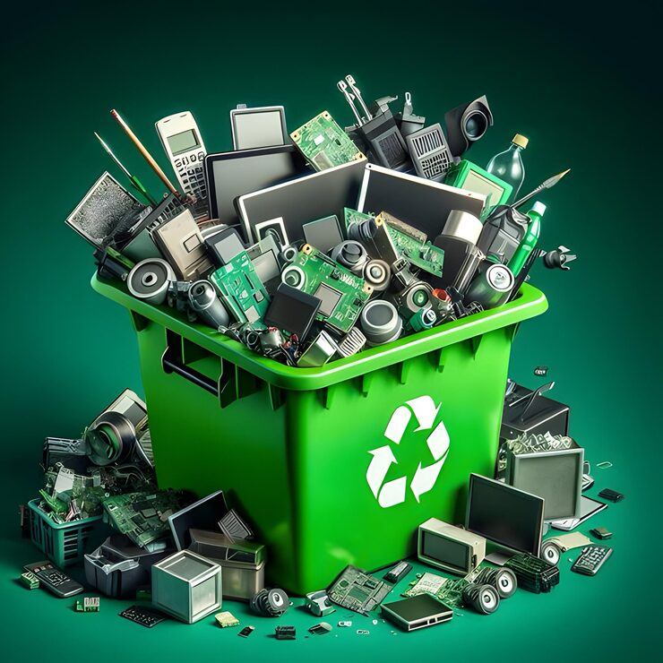

Reciclagem de E-lixo
A reciclagem de e-lixo tem como objetivo dar um destino correto aos equipamentos eletrônicos descartados, como computadores, celulares e cabos, evitando que substâncias tóxicas contaminem o meio ambiente. Essa prática inclui a coleta seletiva, o reaproveitamento de componentes e o descarte responsável de materiais não reutilizáveis. Além de reduzir o impacto ambiental, a reciclagem de e-lixo estimula a economia circular e o consumo consciente, reforçando o compromisso da tecnologia com a sustentabilidade e a preservação dos recursos naturais.
